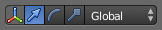
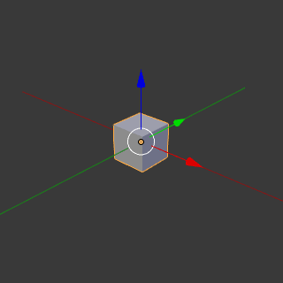
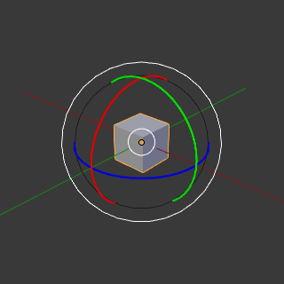
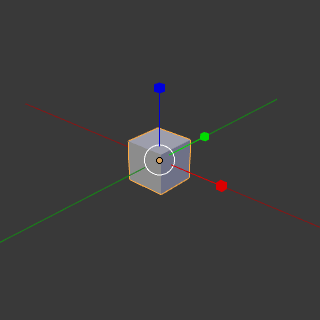
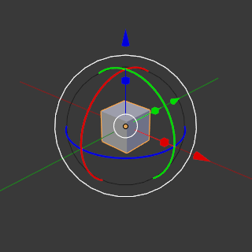

Маніпулятори Трансформацій -- Transformation Manipulators¶
Орієнтир
| Mode: | Object and Edit Modes |
|---|---|
| Menu: |  |
| Hotkey: | Ctrl-Spacebar |
Віджети маніпулятора трансформацій дозволяють керовані мишею пересування, обертання та масштабування у 3D Огляді. Для кожної операції передбачений свій окремий маніпулятор. Кожен з цих маніпуляторів може використовуватися окремо, самостійно, або у поєднанні з іншими.

Translate. |

Rotate. |

Масштабування. |

Combination. |
{kind=link}
{kind=link}
{kind=link}
{kind=link}
Контролери у заголовку¶
Маніпулятори можуть бути доступні через заголовок 3D Огляду -- 3D View.
- Вісь
- Вмикає/вимикає маніпулятори, аналог -- Ctrl-Spacebar.
- Маніпулятори
Перемикають кожен з маніпуляторів. Клацання Shift-LMB на кількох одночасно іконках маніпуляторів буде комбінувати маніпулятори.
- Стрілка
- Пересування.
- Дуга
- Обертання.
- Коробка
- Масштабування.
- Орієнтація трансформацій
- Меню вибірника орієнтації трансформацій -- Transform Orientations.
Контролери маніпулятора¶
Базово¶
You can use the widget by dragging one of the three colored axes with LMB. The transformation will be locked to the clicked axis.
Перетягування мишею маленького білого кільця дозволяє вільне трансформування. У випадку маніпулятора обертання тягнення білого кільця запускає трекбольне обертання -- trackball rotation. Маніпулятор обертання має також ще одне інше велике зовнішнє біле кільце для активації вільного трансформування.
Відпуск кнопки миші підтверджує операцію (підтвердження при відпуску -- confirm on release).
Розширено¶
Операції трансформування працюють, як описано у розділі про точне керування -- precision control, за винятком:
Утримання натисненою Shift після клацання вами LMB на держаку маніпулятора буде обмежувати дію меншими приростами. Утримання натисненою Shift перед клацком вами LMB на одному з держаків спричинить здійснення дії маніпулятором відносно інших двох осей. Дивіться детальніше тут -- Plane Locking.
Xem thêm
Уподобання щодо Маніпулятора -- Manipulator Preferences.